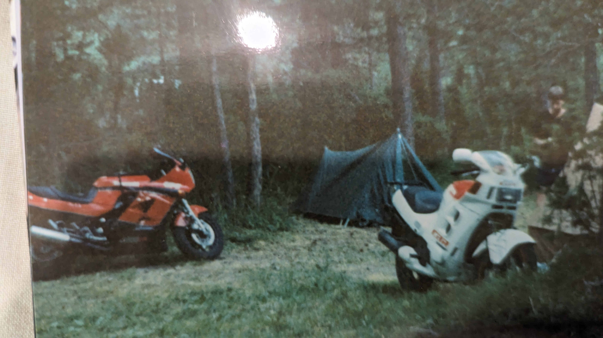
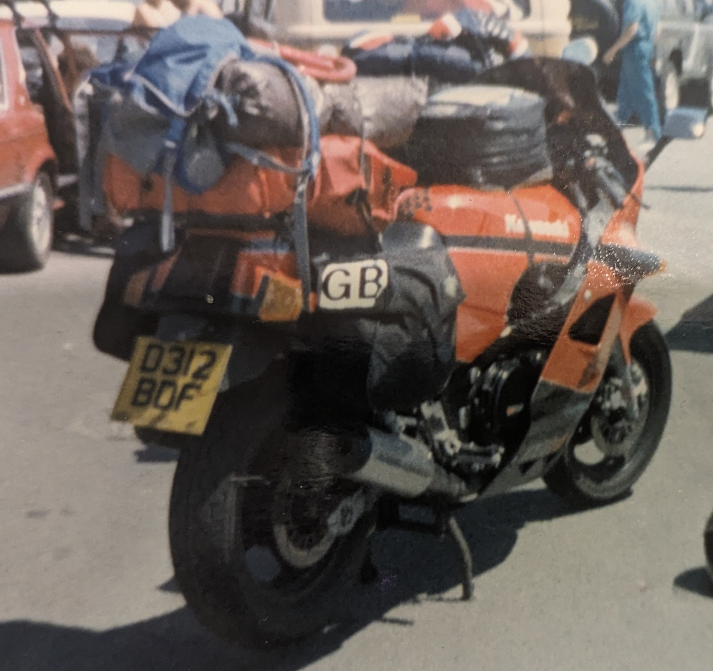
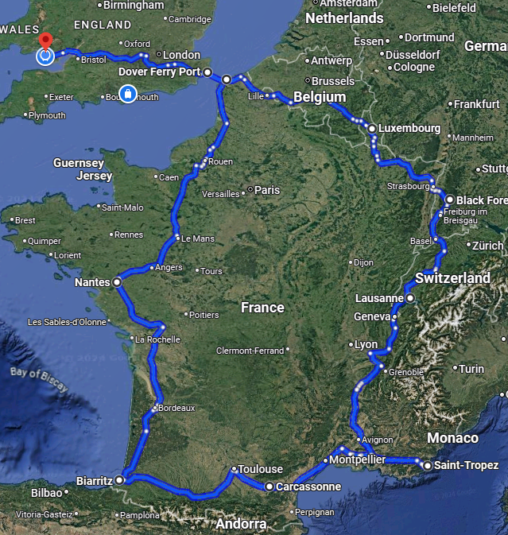
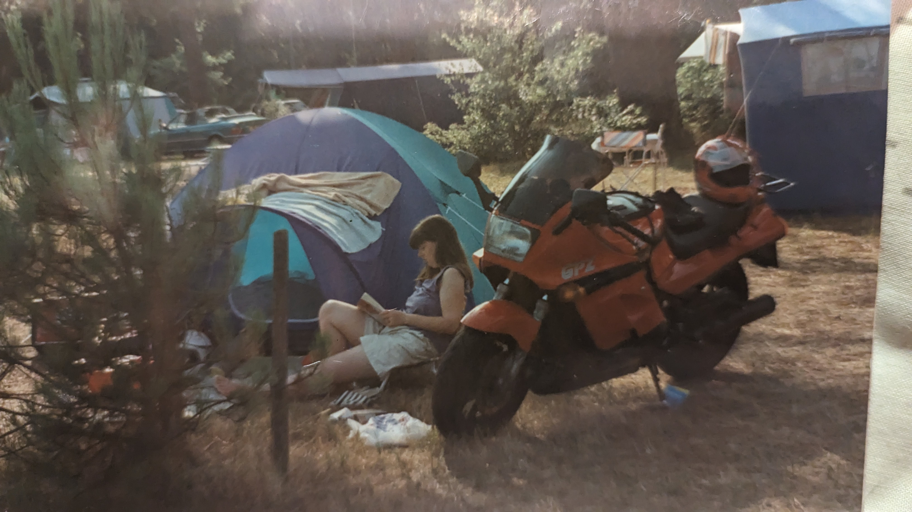

Kawasaki GPZ1000RX
Absolute Beast of a bike
The primary driving force behind the purchase of this bike was when my good friend Vince, you remember him? I might have mentioned him a couple of times, he was my best mate from my time in Germany and beyond, we both had bikes when we were out there and continued our friendship after discharge. He asked me one day if I wanted to do a two week tour of Southern Europe on our bikes. Duh! of course! I was still driving my MG Metro Turbo at the time and didn’t have a bike, and so the seed was sown. Off I went to South Wales Superbikes and part ex’d the Metro for the mighty GPz.
On the way home from the dealer and on the M4 a police bike pulled up alongside me and the copper pointed at his speedo before zooming off, blue lights blazing. I glanced down at my speedo…110mph…different times…
Speed on the Kwaka was effortless, what a beast.

We did our European trip a couple of weeks later, 2000+ miles camping along the way, we went down the west coast to Biarritz, then east following the base of the Pyrenees to the South of France, north east calling into St Tropez(to ogle at the topless ladies) a quick dash into Italy and Switzerland, we couldn’t spend much time there because we only had French Francs so had to get back to France before the next fuel stop, and then a couple of nights in the Black Forest in Germany before heading west through France, Luxembourg, Belgium and Netherlands and back into France to catch the ferry from Calais back to Blighty.

We couldn’t, of course speak French beyond Oui and merci so communicating with the locals proved difficult. This was the 80s so no McDonalds or self serve tills in the supermarket, so it was a case of learn the language quick or starve. We starved.
I wouldn’t have thought we would have planned anything so I guess we camped wherever was open wherever we were when evening time came.
I don’t remember any of the discomfort I suffer on the bike nowadays. Maybe bikes were more comfortable or I was just younger and could put up with it better.
We just rode and rode and rode, I don’t remember much of the journey at all, there was Nantes(twinned with Cardiff), Biarritz, Carcassonne, Saint Tropez, Mont Blanc and the Black Forest, we took a couple of photos and drank some bier, tried to have a dip in some mountain lakes but they were freezing.
The sun was hot, this I know because Vince got so badly burnt he had to visit a pharmacy to get something for the burns and the pharmacist actually swore. We decided to burst the tennis ball sized blisters with our penknives, funny for us, no so much for Vince.

We spent a lovely couple of days in the Black Forest relaxing by the river that flowed through the site and blasting round on the fantastic roads in the region.
Anyway we eventually got to Germany, we had to stay there for a couple of nights to refuel our starved bodies, between us we had a little grasp of the German language, well we should have after spending three years in Germany with the Army. We knew words like bier, frites, fricadelle, bratwurst, eins, zwei, and drei, all the important words.
That certainly wasn’t the last time I went to France on this bike, I ended up settling down with my current wife and we would go camping down in the Vendee area most years with our little tent and a dual fuel Colman stove for coffee and as I was reminded earlier garlic chicken. I can also remember steaming pasties on it too.
One of the sites we stayed at was just around the corner from the famous Luna Parc travelling fairground, the site I go to mostly now is also just across the road from Luna Parc. I’ve tried to work out where we used to stay, I’m pretty good at that but it has changed so much over the years.
The pitches always seemed to be dotted randomly amongst the pine trees, they were brilliant. The pine needles provided a nice soft floor to the tent and no muddy fields to crawl out of the tent into.
I have very fond memories of strangling some French kid with our strategically placed clothes line one year. Well they should look where they are going.

We would do the obligatory visit to the zoo at La Palmyre to go check on the relatives in the monkey enclosure(I wonder if that’s where Liam came from?).
Anyway, that was my wheels for the next couple of years, I eventually sold it to put the money towards the mortgage on my new maternal home and that was the end of my biking for about 15 years 🙁